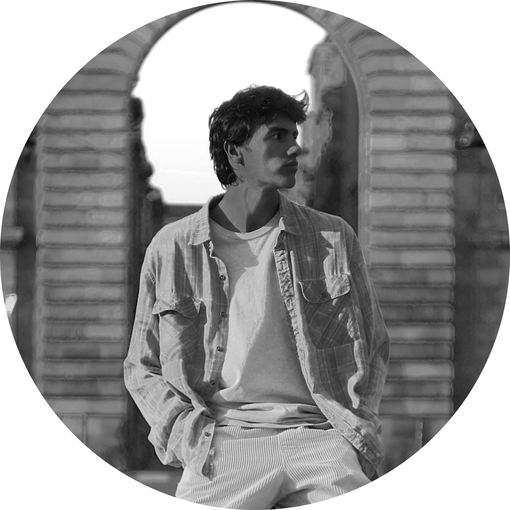
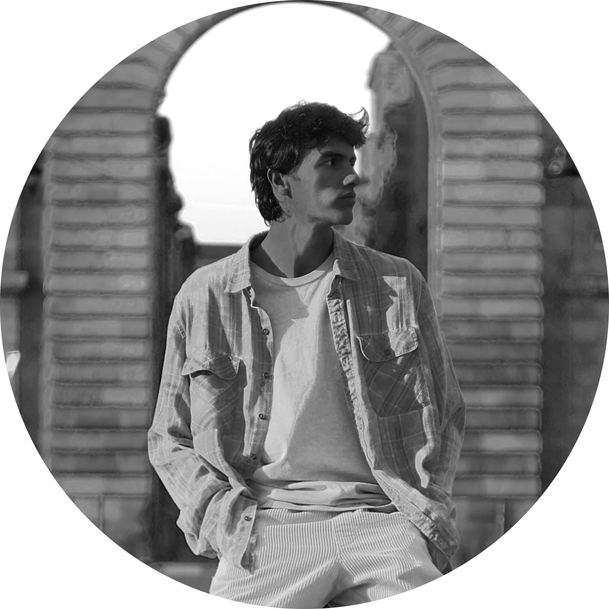

L'ombre du Musée
L’ombre du musée a encore frappé ! Saurez-vous l’arrêter ?
À travers cette expérience interactive, embarquez avec nous dans le Musée des Beaux-Arts afin d’arrêter le voleur des tableaux.
Le Projet
Pour la Bacchanight 2023 organisée par le musée des Beaux-Arts de Bordeaux,
nous avons eu l’idée de créer une expérience vidéo interactive.
On voulait qu’elle soit ludique et qu’elle puisse plaire au plus grand nombre de personnes,
tout en utilisant notre appétence commune pour l’audiovisuel et le motion design.
La Team
Lilou Lopez

Florian Sezer
Mattéo Lambert

Thomas Mesnier


Noé Braud
Inspecter le tableau de gauche
Inspecter le tableau de droite